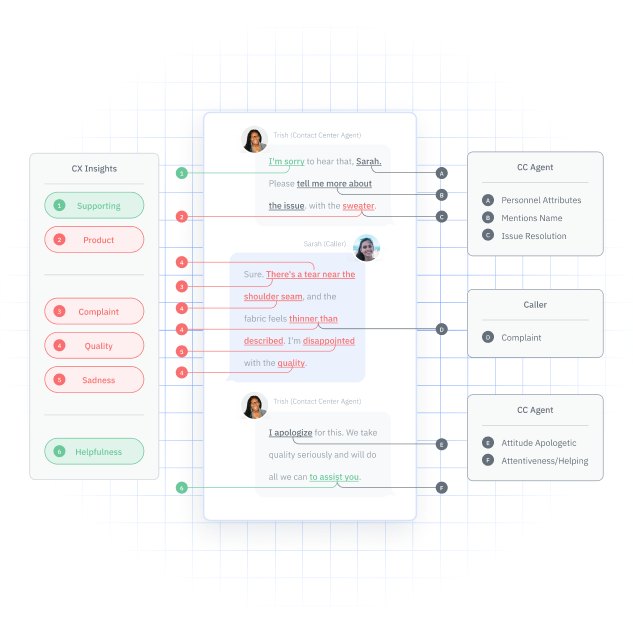
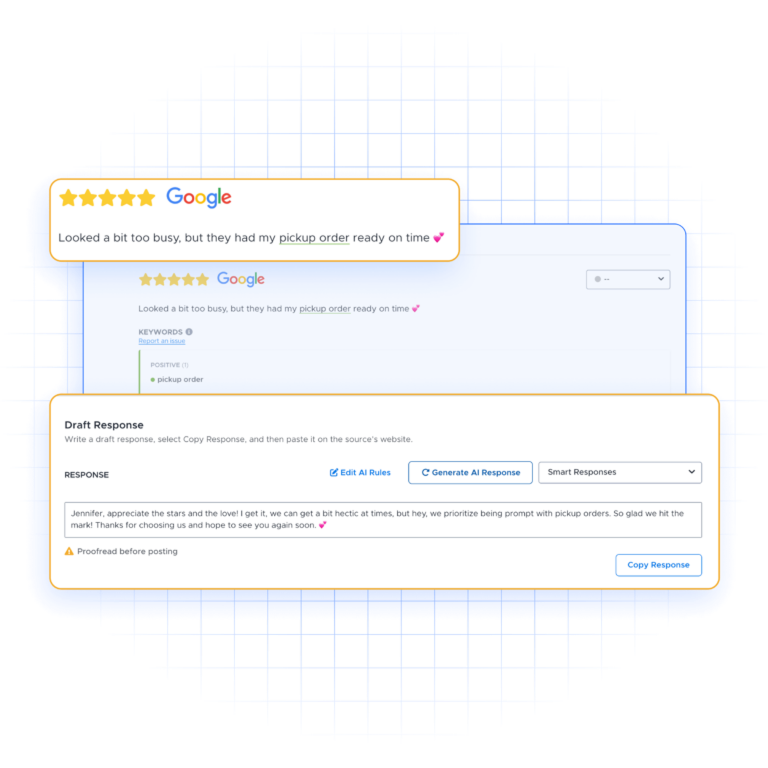
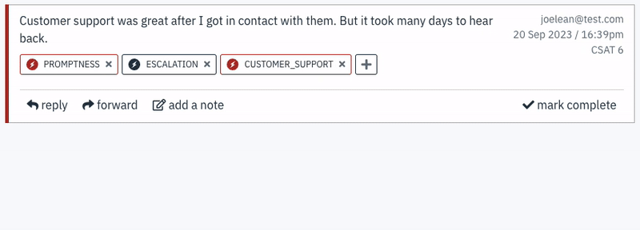
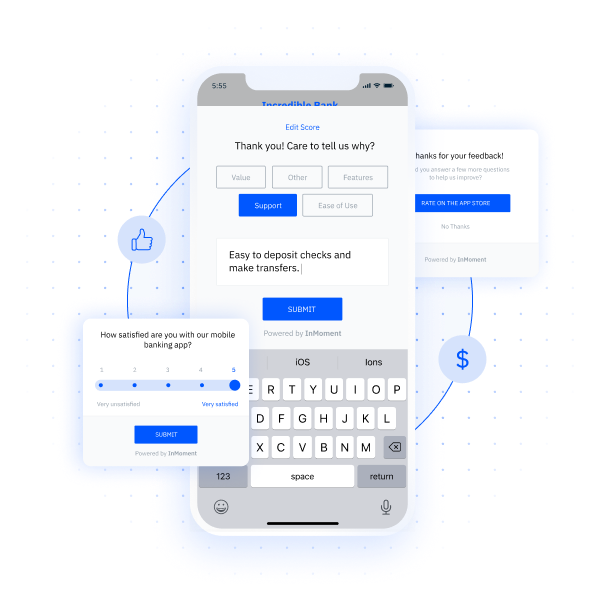
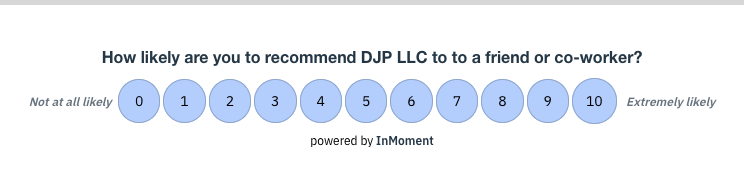
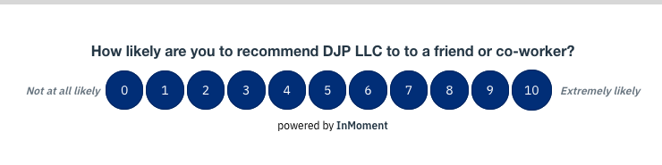

Case studies / Press Ganey
Leading the Wootric platform inside Press Ganey
Overview
After Press Ganey acquired the Wootric platform (which has now ben acquired by Qualtrics), my job was to make it work for a much larger company and a more demanding set of enterprise customers. I was the point person for those customers and for internal stakeholders, deciding what to build and leading the design of it.
Four projects carried most of that work. Two help customers act on feedback: AI that finds the responses worth acting on, and survey designs that look right on every channel and to every reader. Two help Press Ganey itself: one shared view of every customer account, and accessibility standards across the whole platform.
Impact
Using AI to close the loop (Project 1 of 4)
Problem
Enterprise customers collect millions of survey responses, reviews, and support conversations. Teams couldn't tell which ones were worth following up on. When they did follow up, it happened in other tools, so nobody in the CX platform could see whether a customer's feedback had actually been addressed.
Key decision
I redesigned how AI insights were surfaced and acted around two goals:
- Close the loop faster: Get customers doing their job faster.
- Track It: We wanted to track the follow-up and push that data to integrated apps for others to see.
What shipped
AI insights pick out the highest-impact responses from a pool of millions, so teams know where reaching out will matter most. The same analysis works on conversations, tagging what the customer said and how the agent responded.

For public reviews, I designed AI-drafted replies in the brand's voice: the team edits the draft, then copies it to the review site. When Qualtrics acquired Press Ganey, Wootric's parent company, new features like this one were put on hold. The designs were approved, but the full implementation was never completed.

Every response gets a workflow for following up: tag it, add a note, reply, forward, and mark it complete.

Result
Customers are building these steps into their everyday workflow. The biggest change is a sharp drop in the manual work that used to come with finding insights and closing the loop, and customers now want to go further, refining the process and measuring the results.
Unified customer data across platforms (Project 2 of 4)
Problem
Customer data was split across Salesforce, Intercom, our own database, Recurly, JIRA, and scattered spreadsheets. Most of it was only visible to the individual account manager who owned it, so nobody had a company-wide picture of who our customers were or how they were doing.
Key decision
I identified the gap, pitched the fix to leadership, and designed the schema and architecture for a unified customer database. The hardest modeling choice was linking individual accounts to their parent organizations, which had never been done before. We used Holistics, a self-service BI platform, so teams could query and build dashboards without waiting on an analyst.
What shipped
Result
For the first time, Press Ganey had a company-wide view of the Wootric platform, and the database became a foundation for cross-functional teams. The new visibility led directly to upsell opportunities with customers likely to pay more, and recovered sales from demo accounts that had fallen through the cracks.
Custom survey designs across web, email, iOS, and Android (Project 3 of 4)
Problem
Customers wanted surveys that matched their brand everywhere they appeared. Making one design look and behave the same in every email client and in native iOS and Android apps is much harder than it sounds, and every combination a customer might choose still had to meet accessibility standards.

Key decision
Rather than asking customers to trust that a design would carry over, the admin previews the same survey on each channel, and on desktop and mobile, and all email clients, before it goes live.
The biggest restraint to consistency was email platforms and older mobile devices. Microsoft Outlook gave our rounded buttons enough trouble that we had to settle on square. For mobile devices, we had to set a cut-off on iOS and Androids with less than 0.1% of users.
What shipped

Result
Several customers were extremely excited about the update. They had been considering other products for their customizations, and we now gave them enough options to keep them from churning.
Web survey accessibility (Project 4 of 4)
Problem
Customers choose their own brand colors, and many of those choices make survey text hard to read. With surveys reaching people in more than 80 countries, unreadable text means lost responses and excluded customers.
Key decision
We set a goal to meet WCAG AAA across the platform, from surveys to the admin to dashboards, and made contrast automatic so customers couldn't accidentally break it.
What shipped
The survey picks black or white text automatically based on the background color the customer sets. In the rare cases where contrast still falls short, the admin shows a warning saying whether the design meets AA or AAA.


Result
The accessibility update led to fewer user experience issues, allowed us to pass customer audits, and to let all our customers know we were now AAA compliant.
Outcome
Together, these projects moved the platform from collecting feedback to acting on it. Customers spend less time on busy work and more on the problems their feedback points to, Press Ganey can see its whole customer base in one place, and surveys look right and read clearly for everyone who receives them.
Conclusion
The best use of AI was taking a job that should be automated, and automating it. It took the busy work off customer support, sales, and product teams so they could spend their time where it matters.